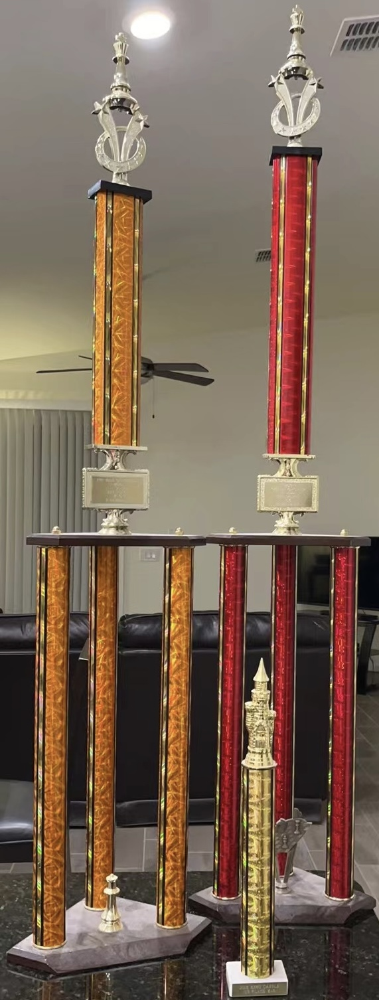
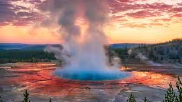

| |
Home | Programming | Engineering | Volunteering & Charity | Stock Trading | Convertible Bond Trading | Piano | Sports & Other Hobbies | For questions please email xzliu@xzliu.com |
 |
BasketballI play basketball in the afternoon/evening for about an hour each day for excersize and fun. Basketball is one of those sports that excersizes the whole body, unlike some activities that only excersizes your arms. |
Chess TrophesThese trophes on the right were earned at |
 |
|  |
TravelingI have been to numerous famous and historical sites in China and the U.S., such as the Great Wall, the Leshan Grand Buddah, the Bund of Shanghai, Arches National Park, Yellowstone National Park, etc. There were plans to visit Europe, and we had the legal paperwork ready and the tickets purchased, but due to COVID-19, those plans were pushed back. |
During one of my first chess tournaments, I had won all three of my previous rounds, and was playing this final round to determing who would be awarded first place. My opponent had used a clever tactic and won my queen which almost
certainly meant I would lose this match.
I decided to play on, telling myself that even if I lost, it wouldn't be due to lack of effort.
During the middle-game, my opponent made a terrible blunder and since I played defensively since losing my
queen, I actually had a large advantage after this. In the end, I was able to emerge victorious and even though I made a mistake, I learned a lesson that day: never give up.